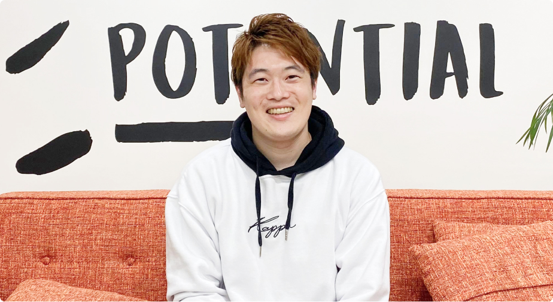

<link rel="stylesheet" href="css/main.css">

<section class="ContentFeature">
  <p class="ContentFeature__icon">
    特徴
  </p>

  <p class="ContentFeature__number">
    02
  </p>

  <p class="success">
    転職成功者のWeb開発企業への<span class="orange">内定率100%</span>
  </p>

  <p class="support">※29歳以下の転職サポート実施ユーザ (2021年7月~10月)</p>

  <ul class="ContentFeature__list">
    <a href="https://camp.potepan.com/interview/631">
      <li class="ContentFeatureGraduateCard">
        
        <div class="ContentFeatureGraduateCard__explanation">
          <p>営業職から<br>エンジニアへ</p>
          
        </div>
        <p class="name-kc">K.Cさん (25歳)</p>
      </li>
    </a>

    <a href="https://camp.potepan.com/interview/662">
      <li class="ContentFeatureGraduateCard">
        
        <div class="ContentFeatureGraduateCard__explanation">
          <p>大手日経メーカーの経理から<br>Railsエンジニアへ</p>
          
        </div>
        <p class="name-kc">S.Kさん (26歳)</p>
      </li>
    </a>

    <a href="https://camp.potepan.com/interview/784">
      <li class="ContentFeatureGraduateCard">
        
      </li>
    </a>

    <a href="https://camp.potepan.com/interview/776">
      <li class="ContentFeatureGraduateCard">
        
      </li>
    </a>
  </ul>
</section>
